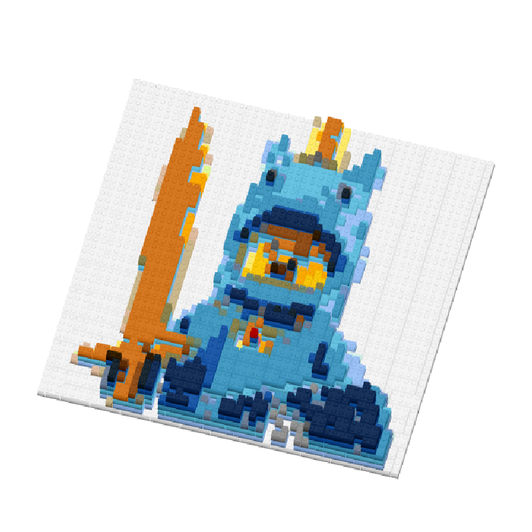
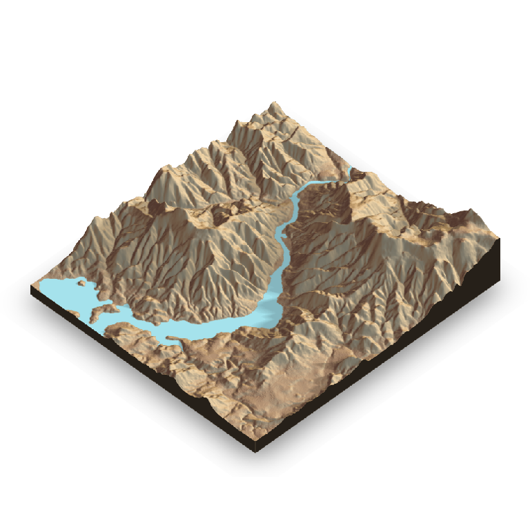
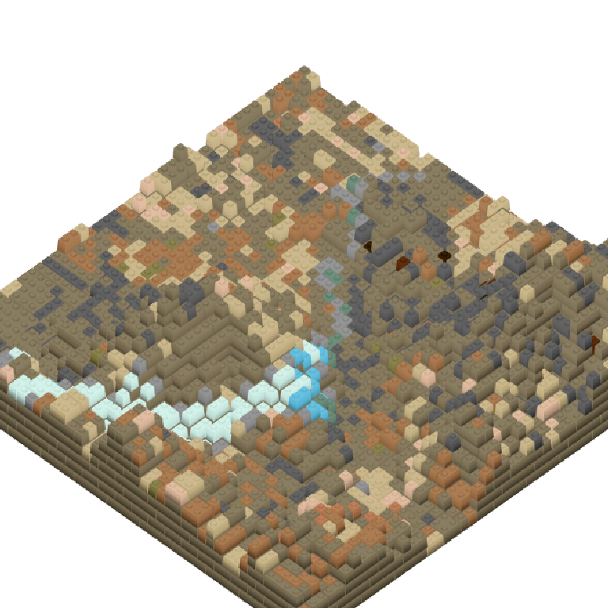

Getting started
The bricks_from_* series of functions creates 3D models of LEGO bricks from a variety of input formats. These models are rendered using Tyler Morgan-Wall’s rayshader package. This package must be installed.
3D mosaics
Begin with a brickr mosaic from an image. Rather than graphically rendering the mosaic using build_mosaic(), use bricks_from_mosaic(). This function takes two other inputs:
-
mosaic_heightis the number of bricks stacked at the mosaic’s highest point. The default is 6. -
highest_elspecifies if ‘light’ or ‘dark’ color bricks should be the tallest in the model. The default is ‘light’.
demo_img = tempfile()
download.file("http://ryantimpe.com/files/mf_unicorn.PNG", demo_img, mode="wb")
mosaic <- png::readPNG(demo_img) %>%
image_to_mosaic()
mosaic %>% build_mosaic()
mosaic %>%
bricks_from_mosaic(highest_el = "dark") %>%
build_bricks(phi = 60, theta = 15)
rayshader::render_snapshot(clear = TRUE)
Models from rayshader
rayshader by Tyler Morgan-Wall is an open source package for producing 2D and 3D data visualizations in R. rayshader uses elevation data in a base R matrix and a combination of raytracing, spherical texture mapping, overlays, and ambient occlusion to generate beautiful topographic 2D and 3D maps. (Note: text lifted straight from rayshader.com.)
3D models in brickr are rendered using the functions in rayshader. Using bricks_from_rayshader(), you can convert rayshader map output into a brickr model. This function takes three inputs:
-
hillshadeis topographic image matrix with an RGB channel (much like the mosaics). -
heightmapis a two-dimensional matrix specifiying the height of the image at each location. -
max_heightis the number of bricks stacked at the mosaic’s highest point. The default is 12. -
img_sizeis the number of bricks on each side of the model. The default is 48.
library(rayshader)
#Example from rayshader.com
#Here, I load a map with the raster package.
loadzip = tempfile()
download.file("https://tylermw.com/data/dem_01.tif.zip", loadzip)
localtif = raster::raster(unzip(loadzip, "dem_01.tif"))
unlink(loadzip)
#And convert it to a matrix:
elmat = matrix(raster::extract(localtif, raster::extent(localtif), buffer = 1000),
nrow = ncol(localtif), ncol = nrow(localtif))
rayshader_object <- elmat %>%
sphere_shade(texture = "desert") %>%
add_water(detect_water(elmat), color = "desert") %>%
add_shadow(ray_shade(elmat, zscale = 3, maxsearch = 300), 0.5)
#Plot with rayshader
rayshader_object %>%
plot_3d(elmat, zscale = 10, fov = 0, theta = 135, zoom = 0.75, phi = 45, windowsize = c(1000, 800))
rayshader::render_snapshot(clear = TRUE)
#Plot as bricks
rayshader_object %>%
bricks_from_rayshader(elmat) %>%
build_bricks(theta = 135, zoom = 0.75, phi = 45)
rayshader::render_snapshot(clear = TRUE)